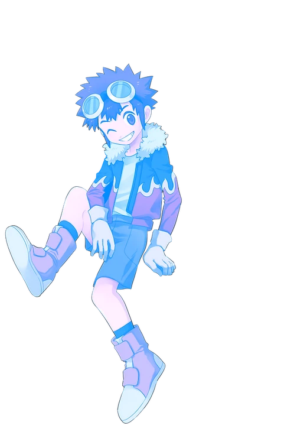
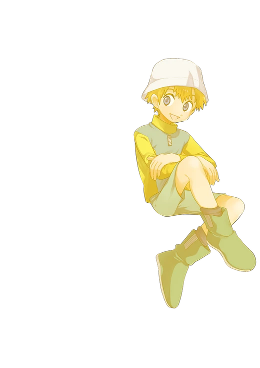

GENERAL
一般参加
SGK＋への事前申込は不要です。親イベントの入場方法・会場ルールをご確認のうえ、当日は参加サークルの頒布物や本部企画をお楽しみください。
- 入場方法は親イベント公式情報をご確認ください
- 当日企画の参加方法は詳細決定後にお知らせします


GENERAL
SGK＋への事前申込は不要です。親イベントの入場方法・会場ルールをご確認のうえ、当日は参加サークルの頒布物や本部企画をお楽しみください。
CIRCLE
親イベントへサークル参加申込後、SGK＋参加表明フォームにご登録ください。配置発表後はスペース番号のご報告をお願いします。